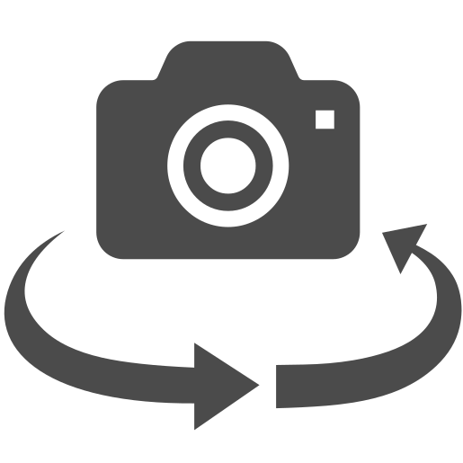

カメラが使用できません。
【BACK】

Loading...
フォトフレームはアルバムではなく「ファイル」に保存されています。
フォトフレームはアルバムではなく「ダウンロード」に保存されています。
撮影しましたが、まだ「保存」していません。それでも良ければもう一度「BACK」ボタンを押して下さい。
You have not yet saved this image.
このWEBアプリは「縦向き」でのみ動作します。
This web-appli works only in portrait orientation.